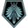

军官 (LWOTC)
军官是接受了额外训练、并在 XCOM 作战中承担战场指挥职责的普通士兵。军官最适合作为固定小队的正式指挥官使用，他们会为这些士兵提供重要的战术和战略加成，其中一些加成会随着小队成员共同执行任务次数的增加而提升。需要注意的是，每次任务中只能有一名军官担任任务指挥官（军官军衔最高者；若军官军衔相同，则比较战斗军衔；若仍相同，则比较意志力）。同一任务中的其他军官将无法使用其特殊能力。不属于最初出任务小队的军官（如避难所顾问、隐秘行动小队等）不能成为该任务的指挥军官。
即便是最低军衔的军官，也可以使用强力的“指挥”技能，该技能允许他们以结束自身回合为代价，赋予视线内任意一名有机友军一个额外行动点；同时还可以使用“干预”技能，用情报资源来延长任务计时器。合理运用军官能力，即使在面对未知、突发或不利因素时，也能显著提升小队的稳定性与生存能力。军官职责本身带有一定的自我牺牲性，许多能力的使用都会让你无法同时发挥他们的其他战斗能力，因此在编组时应确保小队能够弥补军官因使用特殊能力而暴露的短板。
一些重要说明:
- 许多军官能力都会提到“指挥范围”。这是以军官为中心的一个作用范围，能力只在该范围内生效，超出范围则无效。军官军衔越高，该范围越大。你可以在指挥界面右上角点击绿色按钮来切换该范围的显示。
- 当担任避难所顾问时，军官在识别无面怪间谍方面比非军官更有效，且军衔越高效果越强。结合“以身作则”技能（见下文），他们非常适合用于新避难所的招募启动，因为军官能力可以弥补在无面怪搜捕和防御任务中人手不足的问题。
- “尝尝这个”、“迅捷行动”、“指挥”以及“过来了！”不会对“平民”（即 VIP、未武装的反抗军）生效。
训练与能力
军官可通过游击战术学校进行训练，在训练期间将无法出任务（根据等级不同为 4–12 天），除非取消训练。完成初始训练后，所有军官都会自动获得第一行技能。随着军官军衔提升，可训练更多能力。军官的军衔会随其正常等级一同提升。每个新能力都需要花时间在游击战术学校中进行训练。
| 级别 | 能力 | |||||||||
| 初始自带 |
这名军官会为曾在其指挥下服役过的士兵提供意志、闪避和渗透加成。这些加成会随着他们共同执行任务的次数增加而提升。
|
结束你的回合，使小队中任意一名可见有机成员获得一次额外行动。可用次数取决于军官的等级。
|
激活该能力以消耗 10 点情报，使当前任务计时器增加 2 个回合。可用次数取决于军官的等级。
|
对被敌人心灵控制的友军进行手枪射击，+50命中，无法闪避，并且在命中后自动击杀目标。
|
将备用的手枪递给平民友军。
|
|||||
|---|---|---|---|---|---|---|---|---|---|---|
|
少尉 |
花费一个行动点，在回合剩余时间给指挥范围内的所有友军+5移动力。每个任务限用一次。
|
花费一个行动点指定一个视野内的敌方目标，在回合剩余时间攻击该目标时，为你的小队提供1护甲穿透和累加的命中加成。
|
||||||||
|
中尉 |
使指挥范围内的友军在下个外星人回合结束前受到的爆炸物伤害减少4点。
|
花费一个行动点使指挥范围内的所有友军在回合剩余时间获得+20暴击率加成。每次任务可使用两次。
|
||||||||
|
上尉 |
中士(不包含)级别以下的任何士兵一同与拥有该技能的军官成功完成一次任务后将会获得自动晋升。
|
推迟敌人的增援到达时间1回合。每次任务可用一次。
|
||||||||
|
少校 |
军官提升指挥范围内士兵的命中、意志力、侵入能力，具体数值为士兵和军官数值差额的一半。
|
只要军官在健康状态下，小队杀死任何非人形敌人都有33%的几率获得1个情报点数。
|
||||||||
|
中校 |
在军官指挥范围内的所有友军都能在反应射击时获得+10的命中。
|
在军官指挥范围内的所有友军，掩体提供+5点额外防御值。
|
||||||||
|
上校 |
天际游侠号会在被呼叫后提前2回合到达。
|
此军官的小队会更快地潜入敌方目标，减少队伍的潜入时间。
|
||||||||
|
 司令 |
在军官指挥范围内的所有友军的成功攻击都将+1伤害。
|
任务成功后奖励的补给、外星合金和超铀提升30%。有几率从外星人身上收集到额外的外星合金和超铀。
|
||||||||
军官训练候选人
任何士兵职业（包括灵能兵）在至少达到上等兵后都可以接受军官训练。以下是各职业在担任该角色方面的一些说明:
- 忍者 : 极佳。军官能力在使用时不会打破潜行，因此以潜行作战为核心的忍者可以在不暴露的情况下提供贡献。军官忍者也是“忍者-专家”组合中至关重要的一半，这个组合可以轻松完成大多数黑客和越狱任务；在完成目标后，可以使用「指挥」让专家或任务目标迅速脱离危险区域。
- 专家 : 极佳。进一步强化其作为任务工具箱的定位。军官训练让专家在面对特定问题时拥有更多选择，尤其是那些不会消耗宝贵次数的能力。由于专家很少使用主武器，因此使用军官能力的机会成本很低，可以大胆使用那些需要行动点的能力，例如「尝尝这个」、「干扰机」，尤其是「集中火力」。
- 榴弹兵 : 良好。作为另一个依赖次数型核心能力、并拥有一定防御技能的职业，榴弹兵从军官技能中获得不错的收益，因为在较长任务中并不总是希望用宝贵的榴弹来解决问题。像「集中火力」这样的冷却型能力是理想选择。「快速部署」特别有用，当遭遇突发敌人时，可以在发布命令的同一回合投掷防御型榴弹。
- 技术兵 : 良好。技术兵拥有游戏中最多的可叠加防御技能，因此即使冲到前线用火焰喷射器攻击敌人，「坚不可摧」、「燃尽」、「加固」、「战术素养」的组合也会让你的军官成为一个缺乏吸引力目标。此外，由于技术兵的标志性武器本身就依赖次数，将他们同时作为军官可以提高实用性，并在重武器不适合使用时仍有事情可做。
- 机枪手 : 中等。很多时候你更希望机枪手射击而不是发号施令，尤其是在需要对坚硬目标施加破甲时。但他们通常位于中后排，很适合指挥范围覆盖所有队友。像游骑兵一样，如果希望保持输出，应优先选择被动或免费行动的能力。
- 游骑兵 : 中等。游骑兵拥有多种防御技能，使你的军官在战斗中更难被击倒。他们通常位于中后排，指挥范围也往往能覆盖整个视野。不过游骑兵几乎总能通过射击或装填有效利用行动点，因此训练时通常应偏向被动或免费行动的能力；「过来了！」是不错的选择。
- 突击兵 : 较差。突击兵的职责危险性很高，极度依赖行动力与机动性，而管理军官所面临的风险对于保证其生存非常重要。
- 神枪手 : 较差，但某些构筑例外。神枪手通常要么过于孤立，要么忙于射击，不适合作为有效的小队领导者，而且可获得的防御技能较少。不过有一种神枪手构筑与军官能力配合极佳：选择技能树中间路线的所有技能。当神枪手达到中士后，这种配置会大幅提升战术能力，为小队提供一个隐蔽侦察者并在战斗中做出重要贡献。在一个回合内，这名军官可以侦察下一组敌人，用全息瞄准器标记两个关键目标（得益于「快速瞄准」），为关键士兵提供额外行动，并通过「遮蔽」和「以身作则」提供被动增益，而且全程不打破潜行。
- 灵能兵 : 视情况而定。灵能兵本来就需要花大量时间在训练舱中学习灵能能力，再花时间进行军官训练的机会成本可能很高。不过需要注意的是，灵能兵的军衔提升速度比普通士兵快得多，因此如果较早获得灵能兵，可以很快训练出上校或司令，以解锁一些GTS升级和战略收益。军官避难所加成也可以与灵能兵的避难所加成叠加，用于发现无面怪，因此这些士兵可以快速清除全球的无面怪间谍。在战场上，灵能兵本身就拥有大量冷却型能力需要使用，尤其是非常重要的「静滞」和「心灵融合」。当这些能力都未冷却时，需要考虑行动机会成本；但一旦开始使用，多样化的能力能确保每回合都有有用的技能可用。
成长加成
士兵在由军官带领执行任务时，会根据曾经共同执行的任务数量获得以下属性加成:
- 闪避: 每次任务 +0.5，上限 10（20 次任务）
- 意志: 每次任务 +1，上限 40（40 次任务）
- 渗透: 每次任务 +0.0075，上限 0.25（34 次任务）
另见
| Long War of the Chosen 中的XCOM单位 | ||||||||||||||||||||||||||
| 初始 |
|
|||||||||||||||||||||||||
| 可解锁 |
|
|||||||||||||||||||||||||
| 阵营 |
|
|||||||||||||||||||||||||